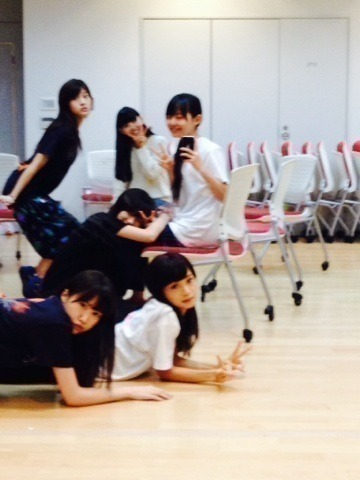
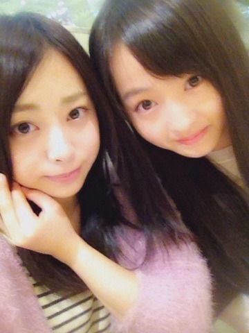
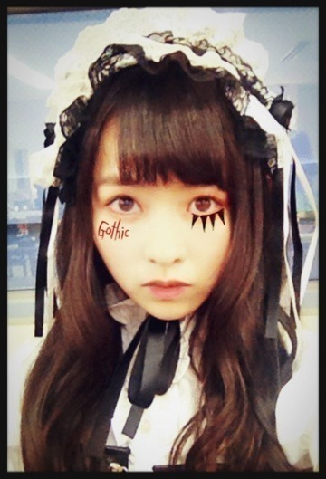

| 2013/10 28 Mon | 髪にとめた。510回目 |

若月、未央奈
私の膝で休憩する真夏
美彩、まいまい
ファースト写真集『乃木坂派』
お渡し会
真洋が写真集
私が劇場版BBJのチラシ
真夏が袋
この順番にお渡ししました。
ありがとうございました♪
誰のサインが当たったかな。
まりっかの当たった人ー！
／
はーい！
＼
ありがとう

下校時の外の空気が
とても過ごしやすい。
少し寒くなって秋の匂いがします。
そんな私は
栗きんとんを作ろうと思います。
去年も大量の栗を剥いて作ったの。
甘さ控えめで、
みんなもやってみよう！
栗をつぶすの楽しいよっっ

久しぶりにねねとゆっくりしたの
買い物したしいっぱいしゃべった！
おでこきれい過ぎて惚れ直しました。
昨日の乃木どこは
ハロウィンパーティー！
最近ロリータロリータ
しつこいですかね。
かわいいもん、あぶりさーもん

ほんとはこのくらいの
メイクしたかったぜー
ゴス！
まりか
コメント(355)
2013/10/28 22:30